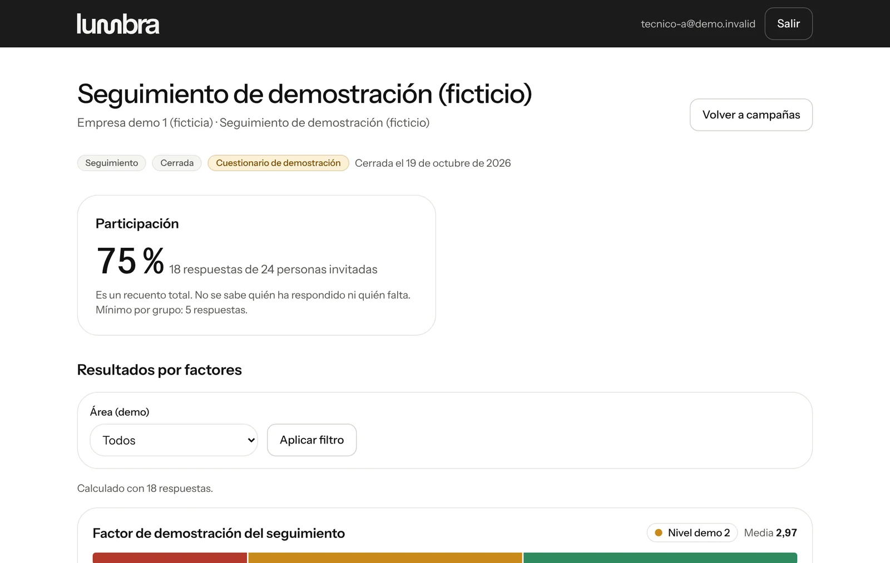
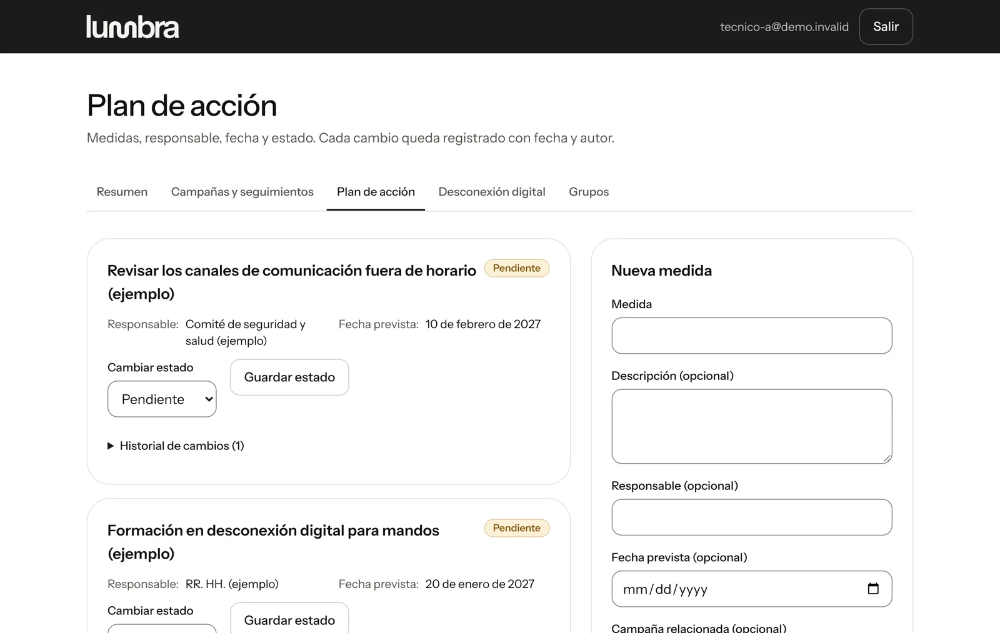
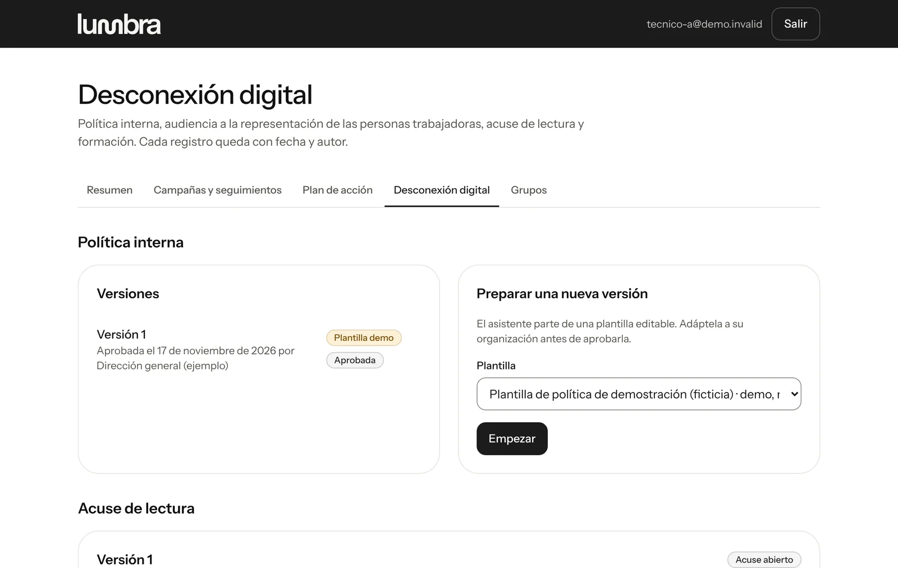
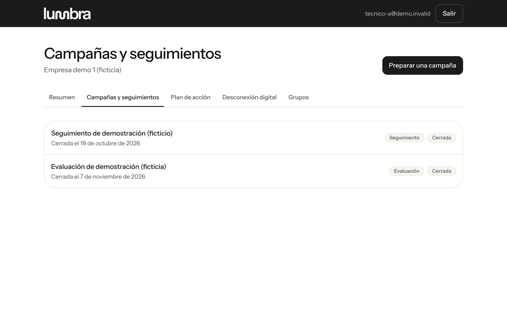

Sistema de marca · versión 3.0 · Tinta y lumbre
Cumplir y cuidar sin vigilar
Blanco con mucho aire, tinta negra para el texto y un único acento bermellón. Titulares grandes en grotesca, movimiento que explica y nada que distraiga.
01 · Concepto y nombre
La vuelta completa, a la luz
LUMBRA360 une «lumbre», lo que ilumina lo que estaba en zona gris, y «360», la vuelta completa: medir, decidir, actuar y demostrar. La marca transmite una sola idea: tengo todo en orden y lo puedo demostrar.
Nombre
En los textos, siempre LUMBRA360, sin espacio. El logotipo dice «lumbra»: el 360 vive en el nombre, no en el dibujo.
Promesa
Ordenar la gestión psicosocial y la desconexión digital de la pyme, con cada paso fechado, sin vigilar a nadie.
Carácter
Sobrio, claro y cercano. Profesional sin ser frío. Moderno sin trucos: el movimiento siempre explica algo.
02 · Logotipo
«lumbra», con la onda
El logotipo original no se redibuja: las versiones se generan desde él. La «m» es una onda continua que une las letras y es también el símbolo.


Normas
- Mínimo: 72 px de ancho en pantalla.
- Área de respeto: la altura de la «l» alrededor.
- Solo positivo, negativo o acento.
- En texto corrido: LUMBRA360.
No hacer
Ni deformar, ni recolorear, ni sombras o degradados, ni sobre la lumbre.
03 · Color
Blanco, tinta y una sola lumbre
La tinta es el negro del logotipo y hace de texto, de acción y de bloque oscuro. La lumbre aparece poco: la acción de más valor, la onda y detalles pequeños. El error es carmesí para no confundirse con ella.
#1B1B1B · texto y acción
#F25A1F · único acento
#FFFFFF · lienzo
#F5F5F2 · alterna secciones
Tinta
Lumbre
Semánticos
Contraste comprobado (WCAG 2.x, AA)
| Modo | Pareja | Texto | Fondo | Contraste | Resultado |
|---|
04 · Tipografía
Una grotesca para todo
Instrument Sans en titulares, interfaz y datos, con cifras tabulares. IBM Plex Mono para valores literales e índices. Las dos con licencia SIL OFL. La elegancia sale del tamaño y del aire, no del peso.
Títulos sin punto final
Ni en la web ni en la aplicación. Las preguntas conservan sus signos.
Frases cortas
Párrafos de 60 a 70 caracteres de ancho, alineados a la izquierda.
Cifras
Siempre tabulares en tablas e indicadores. Porcentajes con espacio: 75 %.
05 · Componentes
Pocas piezas, siempre iguales
Botones en cápsula, tarjetas con el mismo radio y relleno, filetes de 1 px en lugar de sombras y un único botón principal por bloque.
Botones
Solicitar una demostración Cómo se utiliza Exportar dossierLumbre solo para la acción de más valor. Texto en tinta sobre lumbre, nunca en blanco.
Campo
44 px de alto, borde de control con 3:1 y foco en lumbre.
Tarjeta de beneficio
Escuchar sin exponer a nadie
Cuestionarios anónimos. Resultados solo en grupos de 5 o más.
Panel oscuro (bento)
Gerencia de pymes
Un foco de luz sigue al puntero. Para secciones que deben destacar.
Iconografía · Lucide (ISC), trazo 1,75
06 · Movimiento
Se mueve para explicar
GSAP y ScrollTrigger, con desplazamiento suave (Lenis). Las animaciones van ligadas al scroll: avanzan al bajar y retroceden al subir. Con «reducir movimiento», todo se ve quieto en su estado final.
Principios
- Si no explica algo, no se anima.
- Recorridos cortos (24 a 64 px) y curvas suaves; nada de rebotes largos.
- Escenas que cuentan el producto: el portátil que se abre, los papeles que se ordenan, la película de pantallas.
- Nunca se comunica urgencia con movimiento: un plazo se dice con texto e icono.
| Token | Valor | Uso |
|---|---|---|
| --duracion-rapida | 120 ms | Pulsación, color |
| --duracion-base | 200 ms | Menús, interruptores |
| --duracion-lenta | 360 ms | Paneles, cambio de capítulo |
| --duracion-enfasis | 720 ms | Entradas de sección, indicadores |
| --curva-salida | 0.23, 1, 0.32, 1 | Todo lo que entra |
07 · Voz y tono
De usted, claro y sin promesas
Español de España, frases cortas y tratamiento de usted. Se explica qué pasa y qué hacer, sin tecnicismos ni alarma.
Sí
- «Le enviaremos un enlace de acceso.»
- «Resultados protegidos: este grupo tiene menos de 5 respuestas.»
- «Cada paso queda registrado con fecha y autor.»
- Datos de demostración siempre marcados como ejemplo.
Nunca
- «Evaluación oficial», «cumplimiento garantizado», «evita sanciones».
- Cifras, clientes o testimonios inventados.
- Sugerir que el INSST avala la plataforma.
- Mencionar la IA en textos públicos.
Mención obligatoria
Donde se use el cuestionario FPSICO: «Origen del cuestionario: Instituto Nacional de Seguridad y Salud en el Trabajo».
08 · Aplicaciones
La marca en el producto
Capturas reales del panel con datos de demostración, siempre dentro de un dispositivo y con el mismo tratamiento.




Logotipos de terceros
Universidad de Salamanca, Fundación General, Prototipos, RIS3 de Castilla y León y YMCA Salamanca aparecen solo en «Respaldo», en pequeño y sin alterar. Cada uso necesita la autorización de su titular (ver credits.md). WORKWELL360 es el prototipo del que nace LUMBRA360.